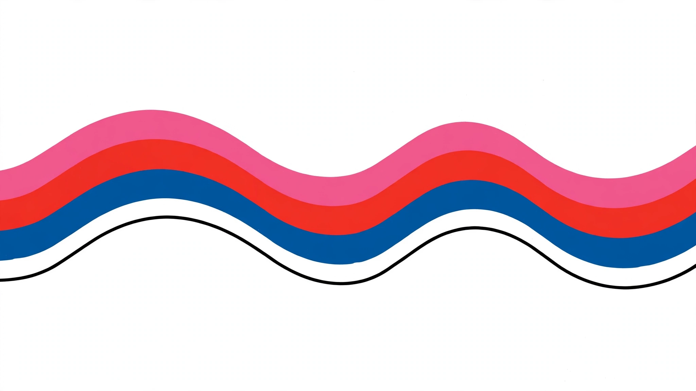
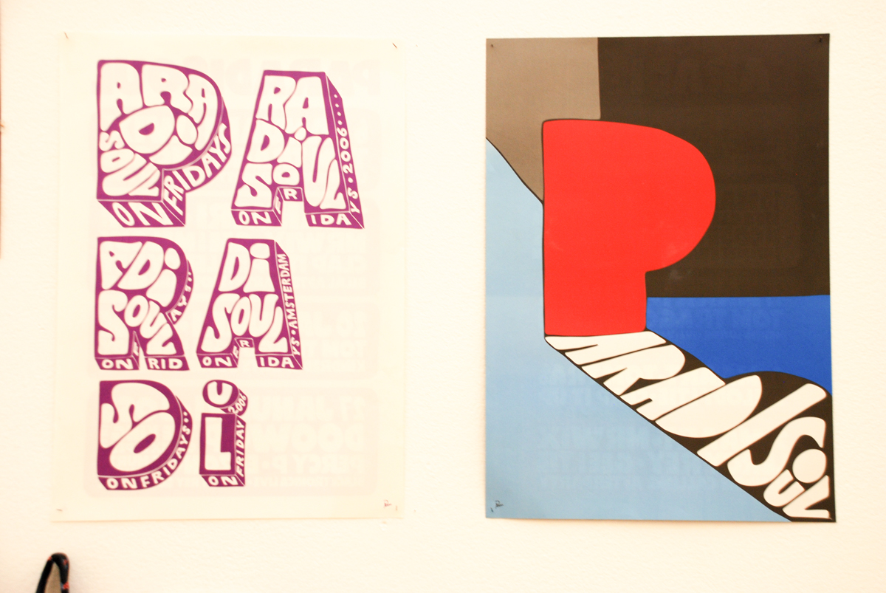
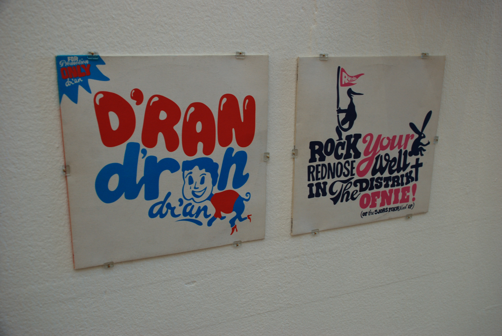
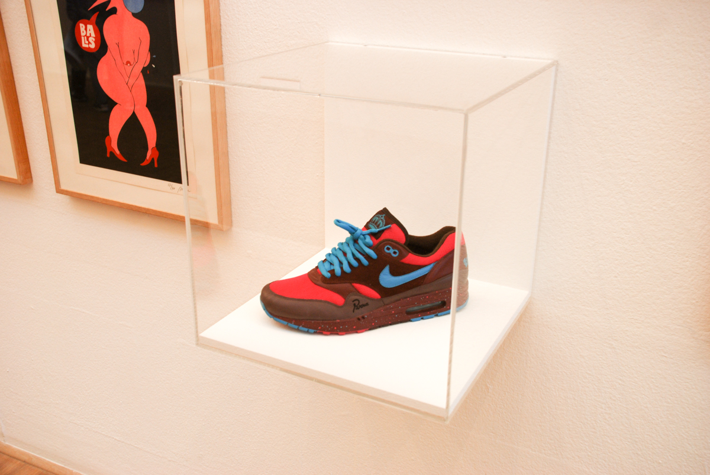
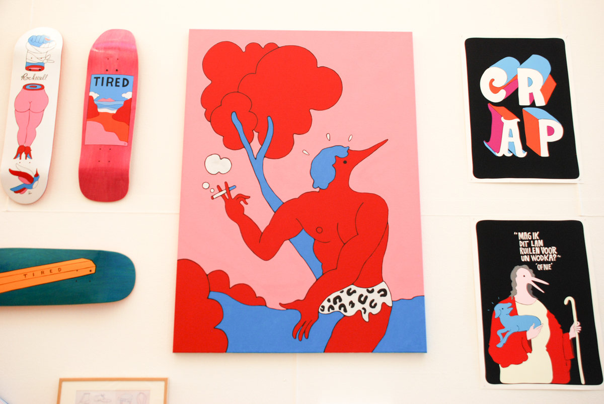
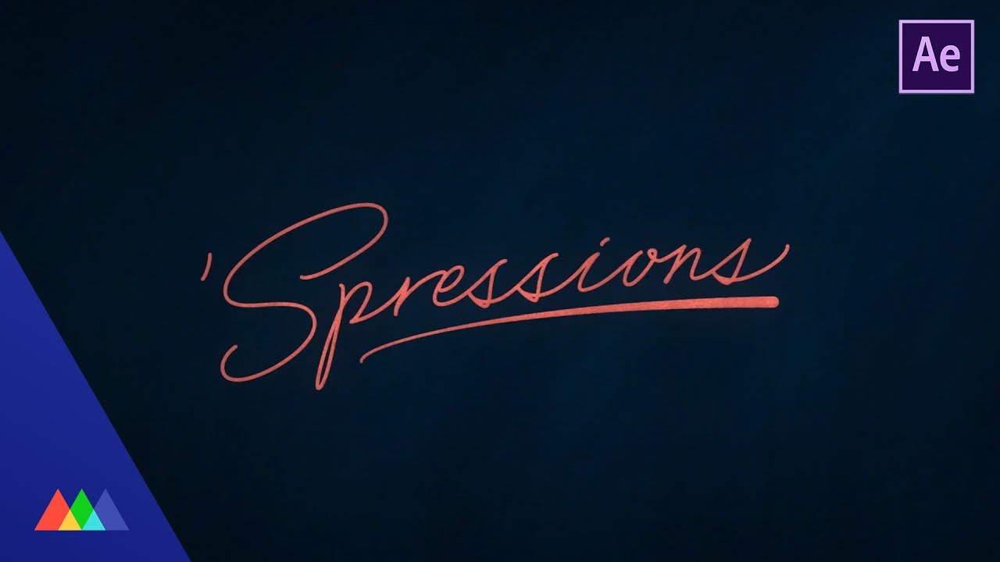
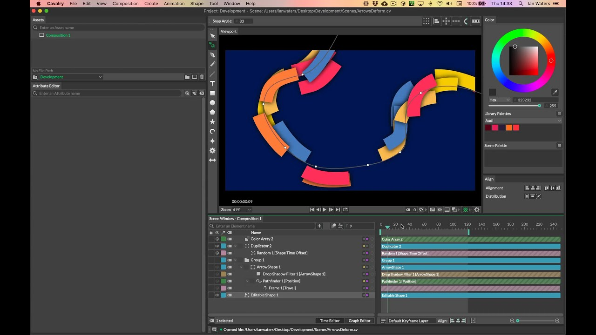

ニュース
今日のハイライト
- クリスマス商戦の広告が本格化。マクドナルド×『ホーム・アローン』はカルキン本人がケビン役で登場する大型IPコラボが今日の主役。
- 「テクノロジーを引く」広告も。HEARTBELTSはベルト1本で心臓の健康を伝える、1950年代風アニメーションの社会派キャンペーン。
- モーション系はF1タイトルのCGメイキングと、洞窟で踊る紙人形のストップモーションMV「Janjan」の2本。機材はInterBEE発のBlackmagic IPスタジオ。
1. マクドナルド×『ホーム・アローン』、ケビンが帰ってくる
マコーレー・カルキンがケビン・マカリスター役で再登場。閉店後のマクドナルドに取り残されたケビンが「またみんなを消しちゃった」とマクフルーリーを作る、グローバル30秒フィルム（Wieden+Kennedy、英国はLeo UK）。Home Alone Mealや限定ソックス、実店舗をマカリスター家風に変えた体験イベントまで、映画の記憶を丸ごと商品と体験に変換した、IPコラボの大型事例。
2. 腰回りが教えてくれる心臓の健康「HEARTBELTS」
英心不全チャリティとHavas Life Londonによる「世界初のノーテク心臓ヘルスウェアラブル」。ウエストが身長の半分未満であるべきという指標を、目安のマーカー付きベルトというモノで伝える。1950年代の啓蒙広告のビジュアルと、アニメーション＋ビッグバンド風の歌のフィルムで、怖がらせずに予防を語る。テクノロジーを足すのではなく引く発想が光る。
3. F1 2026タイトル、CGの裏側をメイキングで公開
DissEmbargoがF1社内クリエイティブチームと作った2026年シーズンのオープニングタイトル、そのメイキング。2025年版からの継続で、ペースや編集構成、アートディレクション、CGの統合を数か月かけて磨き上げた。実写とCGの融合プロセスを追える、スポーツ番組のタイトル設計の好例。
4. Balming Tiger「Janjan」、洞窟のストップモーションMV
オルタナティブK-POPグループBalming Tigerの新曲MV。監督は高橋陸（DOKUZEN）。幻想的な洞窟で紙の人形たちが秘儀のようなダンスを踊る、ストップモーション中心の映像に描きアニメーションの間奏を挟む。K-POPのMVの枠を超えた手触りのある造形で、リズムと素材感の作り方が参考になる一本。
5. Grayscale、暗号資産をシュールな世界観でほどく
暗号資産を「怖くないもの」に見せるGrayscaleの新キャンペーン（JOAN Creative、演出はGolden LA）。カルトの儀式、手術室など3つの異世界を、35人のシンクロ演技やドローン撮影で描く。難解な金融をスペックではなく物語と世界観でほどく、広告の作り方の参考になる。
6. Blackmagic、ATEM IPで「スタジオ丸ごとIP化」を提案
InterBEE 2026レポート。BlackmagicのATEM 4 M/E Constellation IPを中心に、100Gイーサネット＋SMPTE ST 2110でスイッチングから収録までをIPネットワークで構成する。HyperDeck ISO Recorder 100Gは8系統を1台で同時収録。配線の考え方が変わる現場レポート。
7. BIG、木材のボリュームを積み重ねたスイスの新地区
BIGがスイス・トゥーンの新地区「Nachwachsende Stadt（育つ都市）」の計画を発表。木材のボリュームを積み重ねたホテル2棟＋住宅2棟、計1万3000㎡で、SNBS Gold認証を目指す。木造と都市の交差点として、断面と素材の扱いが参考になる。
特集 ― デザイン特集マガジン・第4号

クチバシと、曲がった文字
――Piet Parraと「線を描き直す」デザイン
アムステルダムのクラブの壁に貼られたパーティーのフライヤーから、世界中のスニーカー好きが追いかける「幻の一足」へ、そしてサンフランシスコ近代美術館の壁画へ。ピート・パラ（Pieter Janssen、1976年生まれ）の仕事は、場所も媒体もバラバラに見える。だが芯にあるのはいつも同じものだ。手で描いた一本の線と、ピンク・赤・青の3色、そしてクチバシの生えた奇妙な人物たち。コンピュータのフォントでは出せない「曲がった文字」が、どうやって街の景色そのものになったのか。4つの仕事から、パラの「線」を解剖する。
勉強ポイント
- 文字は「選ぶ」のではなく「描く」。 パラはフォントを使わず、文字を手で描いてスキャンし、Illustratorで描き直す。映像のタイトルバックやロゴも、既存フォントに頼る前に「この作品の声に合った文字を手で起こす」ことを一度は試す価値がある。
- 色は3色に絞り、意味を持たせる。 ピンク・赤・青の限定色がパラの署名だ。Air Max 1では赤が歓楽街そのもの、青がその灯りになった。色数を絞るほど、色が「装飾」から「説明」に変わる。
- 苦手は隠さず「記号」に変える。 顔がうまく描けない――だからクチバシを付けた。弱点を様式化して看板にしたからこそ、誰が見てもパラだと分かる。キャラクター設計でも、描けない部分を削るのではなく、形に置き換える発想が効く。
線は手で描く――フライヤーから始まった仕事
パラはもともとスケーターだった。1996年、20歳でオランダ選手権を制し、スケート雑誌のグラフィックに惹かれてデザインへ進んだ。1998年にデザインの学校に入るも中退し、アムステルダムの小さな会社でコンピュータグラフィックを学んだ。だが得た結論は、コンピュータから離れることだった。「だんだんコンピュータでのデザインをやめて、フォントやレイアウトを手で描き始め、スキャンしてIllustratorで描き直すようになった。そこで自分のスタイルが形になった」（2006年のインタビュー、訳はMuseによる）。
父の言葉も、パラの工程を言い表している。「線を一本描いて、ダメならもう一度描き直せ」。描く→見る→描き直す。この往復が、フライヤーもジャケットもスニーカーもキャンバスも貫いている。その線が最初に街に出たのは、1990年代末のパーティーのフライヤーとポスターだった。2000年ごろからTシャツ販売を開始し、2002年にレーベルRockwellを立ち上げた。

文字そのものが絵になっている。左では「PARADISOUL」が積み木のように立体化し、右では巨大な「P」の脚が文字へとつながる。のちのすべてのパラ作品の原型がここにある。
クチバシの誕生――顔が描けない、という出発点
クチバシの人物が生まれたのは2003年ごろ、アムステルダムの音楽集団Rednose Distriktのアートワークを作っていたときだ。写実的な顔を描くのが得意ではなかったパラは、顔をクチバシに置き換えた。細長い身体に鳥のような頭、手描きのレタリング、彩度の高いピンク・赤・青。描けないことを隠すのではなく、描けない部分を「記号」に変えたのだ。
色の源流のひとつは、パラが集めていたブルーノートのジャケットだ。2色のデュオトーンに1色を足すだけの簡潔な配色。「色を絞る」感覚が、ピンク・赤・青の3色に集約された。彼の色は「自然な色」ではなく「決めた色」だ。

右のジャケットでは、旗を持つクチバシの人物のまわりに文字が大きさも書体もバラバラに踊る。文字は読むものではなく、絵の部品だ。左の「D'RAN」でも、赤と青の文字が3段に重なり、隙間に小さなキャラクターが顔を出す。なお「Parra」の愛称は、ゲストリストの確認電話を何度もかけるパラを友人が「paranoidだ」とからかったことに由来する。
街の色を、靴にのせる――Air Max 1「Amsterdam」2005
パラの線が最も広く知られることになったのは、スニーカーの仕事だ。2005年、Nikeの「Capitol Series」でアムステルダムを代表するAir Max 1のデザインを任された。最初の案は、スーパーマーケットAlbert Heijnのレジ袋。オレンジ・青・白の配色で、袋に入れて路上で売るジョークまで考えていた。ところが発売直前にAlbert Heijnが袋とロゴを変更し、土台が崩れた。パラは案を捨てた。未発売のオレンジ版は、いまも「幻のサンプル」として語り継がれている。
代わりに選んだ題材は、アムステルダムの歓楽街、飾り窓地区（Wallen）だった。赤が街そのもの、明るい青のスウッシュとシューレースが飾り窓の灯りを表す。かかとには「Amsterdam is King」の文字、タンには王冠。赤と青は「好きな配色」ではなく、「この街の色」なのだ。

生産数200〜250足程度とされるこの一足は、オランダで初めて「店の前に行列ができた靴」になったと言われ、現在は数千ユーロで取引される「聖杯（グレイル）」のひとつだ。パラとNikeの関係は20年以上続いている。パラはまず絵を描き、「どうすれば靴をこの作品に巻き込めるか」を考えたという。靴の形に絵をはめ込むのではなく、絵の文法を靴の構造に翻訳する。スウッシュもシューレースもソールの斑点も、ポスターの平色と同じ役割を果たしている。
Tシャツからキャンバスへ――「普通の絵」を描き始めた2009年
パラのギャラリーでの活動は、ほとんど偶然から始まった。2005年、ロンドンのKemistry Galleryの地下スペースでの展示を広告代理店から持ちかけられ、ポスターやフライヤーの図版を拡大して安価なプリントにした。『Jobs I Do for Friends for Less than 100 Pounds』と題した、依頼仕事の延長線上にある展示だった。
転機は2009年、ベルリンでの個展『I Like the Tee Shirt but I Will Get the Painting』。依頼のためではないキャンバス作品と彫刻を初めて発表し、以後、絵画・彫刻・テキスタイルへ広がった。2010年にオランダ・デザイン賞とアムステルダム芸術賞を受賞し、2012年にはSFMOMAが『Parra: Weirded Out』を開催。2015年にはクンストハルで母国初の大規模個展が開かれた。

『Tarzan Interrupted』（2009年）は、この転換期の代表作だ。赤い身体に青い髪、長いクチバシ。タバコの煙が白い雲になって漂い、後ろには赤い木と青い幹が立つ。背景はピンクの平色で、地面は青い帯だけ。物語の説明は一切ない。誰もが知るターザンをパラの記号に置き換えただけで、絵は成立している。ポスターで培った「説明しない」姿勢が、そのままキャンバスに移っている。
系譜――亀倉の「引く」に対して、パラは「曲げる」
前号の亀倉雄策と並べると、共通点と対照がはっきりする。共通するのは「限定色の平色」だ。亀倉の赤い丸と金色の五輪も、パラのピンク・赤・青も、色数を絞ることで形の強さを保っている。違うのは線の性格だ。亀倉は直線と幾何学で「引く」ことで意味を凝縮した。パラは曲線で「足して弾ませる」。曲げて膨らませることで、同じ「平色の強さ」にたどり着いている（Museの分析）。
クチバシの人物は、ピクトグラムの記号性とも響き合う。1964年の東京オリンピックの競技ピクトグラムが、言葉の通じない人に絵だけで案内したように、パラの人物も「何者か」を絵だけで伝える。違うのは温度で、パラの記号はユーモアと不条理を帯びている。街の壁から始まった文字が、スニーカーと美術館の壁まで運ばれた――その経路そのものが、パラの作品の主題だと言える。
映像の仕事に置き換えるなら、パラの教えはこうなる。線は一度で決めなくていい。描いて、見て、描き直す。残った線だけを決めた3色で塗れば、画面は誰のものか分かるものになる。
出典
- Shelflife「Parra: Drawing His Own Line」 https://www.shelflife.co.za/magazine/parra-drawing-his-own-line
- XLR8R「Parra: Amsterdam's Most Wanted」（2006-02-21） https://xlr8r.com/features/parra-amsterdam-s-most-wanted/
- The Hundreds「The One They Call Parra :: 10 Ways Piet Parra Introduced His Art to the Masses」（2015-04-09） https://thehundreds.com/blogs/content/10-ways-piet-parra-introduced-his-art-to-the-masses
- Sneakerjagers「10 Days of Air Max - The Parra x Nike Air Max 1 'Amsterdam'」 https://www.sneakerjagers.com/en/n/the-parra-x-nike-air-max-1-amsterdam-2005-a-highlight-from-the-netherlands/19864
- artincontext「Piet Parra - Pop Culture Reimagined」 https://artincontext.org/piet-parra/
- Shelflife「Nike x Parra Collaboration」 https://www.shelflife.co.za/magazine/nike-x-parra-collaboration
AE／Cavalry チュートリアル・表現コーナー
線を自在に操る2本
AEはエクスプレッションで組むテーパーストローク、Cavalryはパスに沿ってシェイプを変形させるPathfinder
エクスプレッションで作るテーパーストローク ― Tutorial: Tapering A Stroke with Expressions in After Effects Part 1

AEのシェイプレイヤーには、線幅を先細りにする機能が標準でありません。そこでTrim Pathsで線を細かく区切り、エクスプレッションで各区間の開始・終了と線幅を連動させる「テーパーストロークのリグ」を一から組む、2部作の前編です。ピックウィップでの参照から、スライダー／アングルコントロール、簡単な数式まで段階的に解説されます。
表現ポイント：核は「1本のパスを“区間”に分けて、数値で制御する」発想。手描き風のライトオンやロゴの書き出しなど、線の太さに表情を持たせたい広告カットに直結します。完成したリグは無料プリセットとしても配布されています。
パスに沿ってシェイプを変形させる ― Feature | Animate or deform shapes along a path in Cavalry

PathfinderとDuplicatorを組み合わせ、矢印などのシェイプ群をパスに沿って配置・変形させながらアニメーションさせる、公式のフィーチャー解説です。パスの形状を変えるだけで群れ全体の動きが追従する、プロシージャルな作り方が分かります。
表現ポイント：核は「パス＝動きのレール」という考え方。ロゴの周りを要素が流れる演出や、図解の矢印アニメーションなど、AEではキーフレームを大量に打ちがちな動きを、Cavalryならパス1本で制御できます。
今日試すなら：まずCavalryのPathfinderから。パスを1本描くだけで、群れの動きがすぐ形になります。